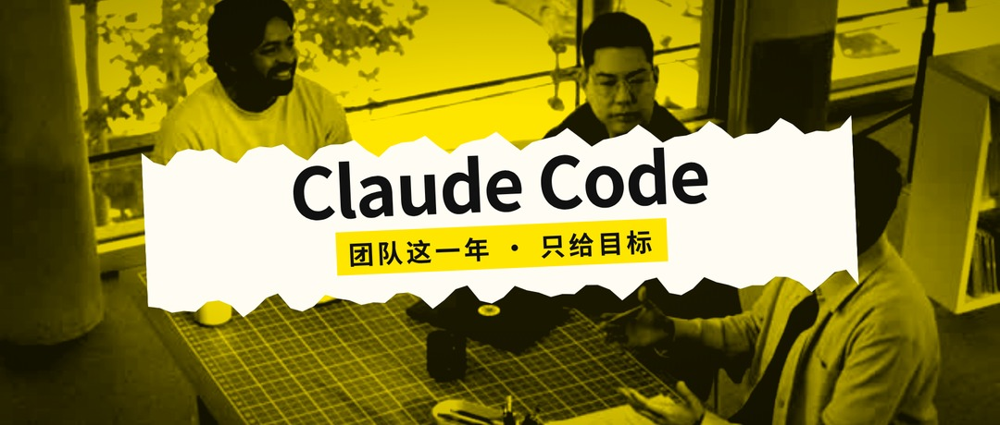
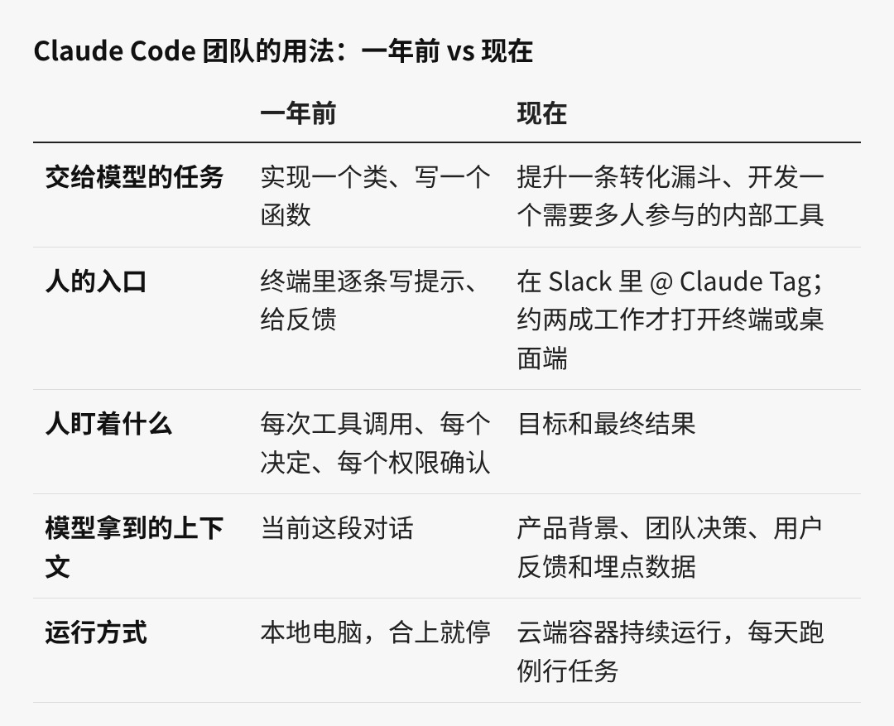
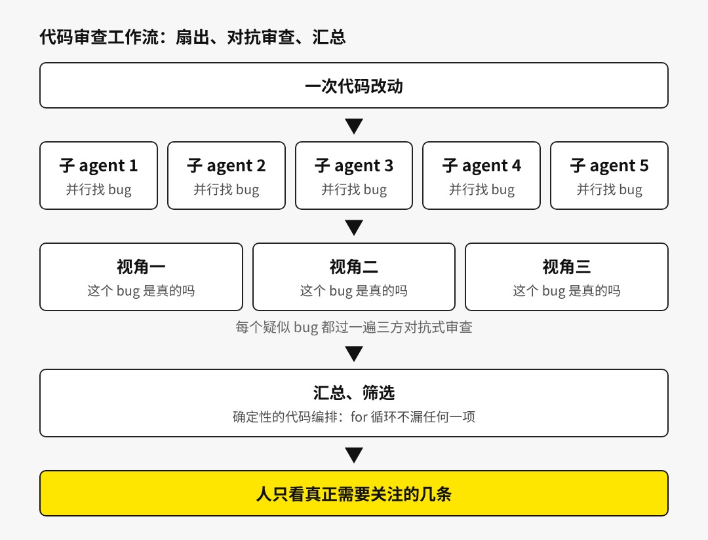

Anthropic 放出的一段内部对谈，把 Claude Code 团队这一年的变化摆在了一起：交给模型的任务越来越大，人盯着的过程越来越少。
这段对谈约 21 分钟，参与者是 Claude Code 团队的三位工程师：负责提问的 Thariq Shihipar，以及 Sid Bidasaria 和 Robert Boyce。一年前，团队使用 Claude Code 的方式是写提示、给反馈、逐个点击权限确认；现在，Sid 七到八成的工作在 Claude Tag 上完成，只有两成左右会打开终端界面或桌面端做细调。Claude Tag 是常驻在 Slack 里的 agent，Robert 正在开发它，开发用的也是 Claude Tag 本身。
对谈里反复出现的一条线索是速度。底层模型大约每两个月变化一次，围绕模型搭建的功能和流程也随之过期。团队这一年的做法，是持续拆掉替模型补短板的功能，把人从执行过程里撤出来，只保留目标、验证和判断这三件事。
01
Sid 对这一年的概括很直接：以前特别在意对话记录，在意每一次工具调用、模型做的每一个决定；现在退远一步，只说「我有一个目标，想把它达成」，然后把这个目标交给模型去完成。
Sid Bidasaria（右）：七到八成的工作已经在 Claude Tag 上完成
任务的尺寸也随之变化。Robert 说，最早交给 Claude Code 的是「实现这个类」「写这个函数」，现在交给 Claude Tag 的问题复杂得多。原因之一在于位置：Claude Tag 运行在 Slack 里，可以自己去查产品背景，查团队对这个产品做过哪些决定。上下文越完整，agent 做选择时的判断就越准确。
Thariq 讲了一个更完整的例子。他在开发一个需要同事支持的内部工具，第一步就问 Claude Tag：这个想法应该先找谁聊。拿到相关同事的名单之后，样稿和实现都在 Slack 里完成，手机上也能查看。工具在内部上线后，他加了一批埋点，交给 Claude Tag 监控，有人反馈就 @ 他。后来他发现用户在转化漏斗里走不到底，本想直接让 Claude 按自己的方案修改，转念改成让 Claude 去提升这条漏斗，自己的方案只作为其中一个参考。他说，那一刻才真正开窍。

图表备注：根据对谈内容整理，「现在」一栏为三位工程师描述的用法
这意味着，交给模型的单位从「一步」变成了「一个结果」。人不再规定先做什么、后做什么，只说明要达到什么状态，以及做完之后怎样判断做得好不好。前提同样清楚：模型要能在长任务里保持连贯，并且拿得到足够的上下文。
02
团队对这件事的形容是「保质期」。过去做一款产品，底层技术的保质期以年计算，有把握它能存在几年甚至更久；在 AI 模型上，脚下的技术大约每两个月就彻底变化一次，这个周期可能还在缩短。团队要站在能力前沿，甚至越过前沿去感受边界，同时还要让今天的用户用得上，「一半是艺术，一半是科学」。
典型的例子是待办清单。Sid 回忆，大约在 Sonnet 3.5 的时候，模型还做不了长线任务，给它五件事，做完三件就放弃。团队给它加了一张待办清单，效果立刻好起来，「正是那个时刻需要的东西」。一年后，这个功能消失了，模型可以依赖更复杂的记忆状态，不再需要清单。Sid 的结论是：要对自己做的东西毫不留恋，因为它们很快就会消失。
Robert 从工程角度解释了原因：Claude Code 外壳里的很多功能，本来就是为了弥补当前模型的失效模式。模型变强之后，团队可以判断这些功能已经不再需要，直接拿掉。与之平衡的是，任务越来越大，模型需要新的工具才能在更大的任务上保持连贯，工具的样子也随任务范围改变。
提问工具（Ask User Question）走的几乎是同一条曲线。Thariq 想让 Claude 能和人互动，最初把提问放在规划之后，后来大家建议做成一个模型随时可以调用的工具。这个工具他设计了很久，让 Claude 用好它很困难；等到终于设计好，模型很快就变得很会用。最近他甚至没怎么用这个工具：Claude 直接做了一个带图示和样稿的 HTML 页面，在页面里向他提问。从工具勉强能做到，到模型自己就能做到，中间只隔了很短一段时间。
图表备注：根据对谈内容整理；Sonnet 3.5 为 Sid 回忆的大致时间点
Thariq 把团队比作软件开发未来的「精神时光屋」，也就是《龙珠》里一天顶外面一年的修炼室。模型一变好，团队就要很快做出大改动，比如由一个小团队开发一个全新的主动型 agent，同时重写权限系统、开发 artifacts。在他看来，多数产品没有这么短的保质期，但每个工程师多少都要理解模型能力往哪里走。
Thariq Shihipar：某种程度上，我们就是软件开发未来的「精神时光屋」
03
人从过程里撤出来之后，下一步是让 agent 离开对话窗口，自己持续运转。
Sid 讲了「循环」（loops）的来历。他原本把所有任务都放在笔记本上本地运行，下班回家就得合上电脑，agent 也跟着停下；开着电脑走到停车场，旁人会投来奇怪的眼光。之后他改用公司托管的远程开发机，电脑可以关，但每次都要 SSH 连回去。再往后是网页版 Claude Code：托管容器可以在后台一直运行。让容器接入开发环境需要一番配置，他认为完全值得，「自那以后我的效率提升了十倍」。
运行在云端之后，可做的事情就多了，比如设置例行任务：每天查看所有用户反馈，按重要程度分组，把有把握修好的那部分直接修掉。这就是团队里 Boris 常讲的循环：从在一次会话里给模型写提示，到打破会话的边界，给更高一层的东西写提示，再由它去修 bug、替人办事。
另一条线是工作流（workflows），起点是代码审查。团队第一次做大规模「扇出」：为了找出所有 bug，同时派出很多个子 agent 去搜，再把结果汇总，用他们的说法，就是在推理阶段投入大量算力（test-time compute）。每发现一个疑似 bug，再让模型从三个不同视角做一次对抗式审查，判断它是不是真的 bug，最后只把需要人关注的几条交给人。

图表备注：根据对谈中代码审查工作流的描述绘制，子 agent 数量为示意
同样的结构可以用在很多问题上：性能问题、通用的深度调研，甚至带父母去太浩湖该住哪里。对谈里把它比作 MapReduce：扇出之后信息太多，必须筛回人能读的量，「要是让我直接读扇出的结果，我会疯掉」。他们还发现，Claude 很擅长给自己搭这类框架，包括扇出的结构、一个 agent 的输出怎样接进下一层、最后怎样汇总。
信任来自代码。工作流由 agent 写代码来编排子 agent，确定性的代码和 agent 的判断混在一起。看到一个遍历所有条目的 for 循环，就知道它不会漏掉任何一项，每一项都用同样的方法处理，「这真的提高了我对它的信任」。
04
代码越写越多，团队不希望工程师的工作变成审代码。Robert 描述了传统人工审查的一个常见场景：审查者挑出三个小毛病发上去，其实是在示意「这段代码我认真读过了」。现在，这些小问题可以交给 Claude 自己找、自己改，它们已经不是人工审查的重点。
人要看的是更大的图景：这个 API 为什么这样设计，服务边界为什么划在这里，背后可能有 Claude 写 PR 时没有完全理解的原因。Claude 能做的，是把这类信息找出来交给人判断，让审查者不再一行行读代码挑毛病，把注意力放到更高一层的抽象上。
验证是另一根支柱。团队在验证上花了很多心思：Claude 给 Claude Code 提交 PR 时，会自己测试，并把界面截图发过来。一位成员的做法是先让 Claude 录下自己操作终端界面的过程，再亲自克隆下来试一遍，「只为求个心安」；另一位的判断是，以后连克隆都不需要了。验证、代码审查、接入反馈数据（指标、Slack、GitHub issues），这三样都已经是 Claude Code 里的基础能力。
Claude Tag 又往前走了一步。这是团队第一次让用户界面和对话记录完全分开：在 Slack 里看到的消息，是 Claude 调用工具发出来的，它的内部独白在 Slack 里看不到，只留了一个查看完整记录的链接。Robert 说，这层抽象一开始有点吓人，看不到 Claude 当下在想什么；但也很解放，由 Claude 决定什么时候、对人说什么，人不再关心它调用了哪些工具、传了哪些参数。用他的话说，是「被逼着放手，让它自己发挥」，结果发现不用细看记录也能拿到好结果，「这些模型现在真的变得很强了」。

Robert Boyce：这层抽象一开始有点吓人，我看不到 Claude 当下在想的每一件事
05
这一年，开发者要跟进的东西很多，自动模式、记忆、工作流一个接一个。对谈里的看法是，现在做软件工程师，难的是腾出脑子退后一步：现在什么已经可能，还能自动化什么，怎样把事情想得更大。
聊到怀念什么，Sid 说他以前很享受性能工程，深挖一个系统，把性能一点点抠上去；现在 Claude 在这件事上比他强得多，他照样能享受性能提升带来的结果。他的注意力转到了新想法上：从想法到原型再到上线，速度快了很多，工作方式也从深挖细节变成站远一点看全局。
Robert 是个注重细节的人，曾经花一整天，用一层层径向渐变在个人网站上用 CSS 复刻 Mac OS X 10.4 的 Aqua 按钮。现在这种事 Claude 就能做，他不会再手工去做。这让他想起七八岁时想做电子游戏，还不会写代码，就用 PowerPoint 画形状、做可以点击的页面。如今只要说清楚想做成什么，再和 Claude 一起拆解，整个软件工程都在他够得着的范围之内。
视频开头，有人问起对明年的打算，回答是：「接下来两个月我都很难去想。明年？真不知道。」
放在整场对谈里，这句话并不消极。模型每两个月换一次，围绕它搭建的清单、工具和流程迟早要拆；能留下来的，是交给它的那个目标，以及判断这个目标对不对的人。
原声来自 Anthropic 官方视频，中文翻译与整理为 AI 辅助完成。